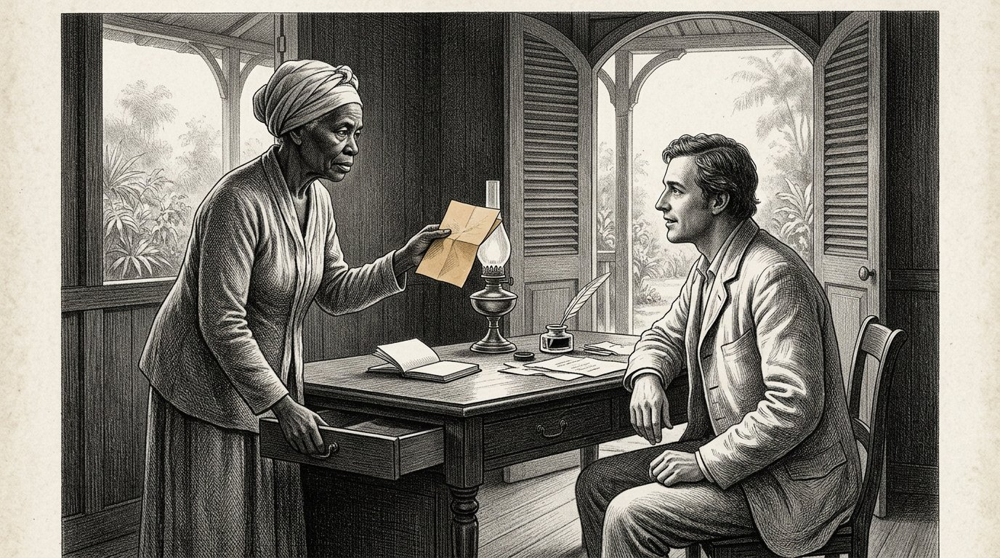
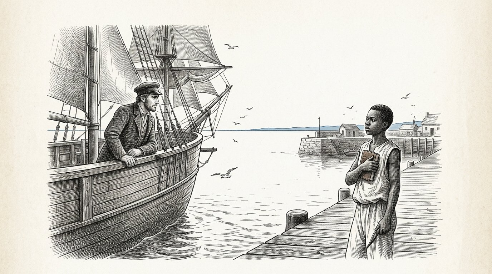

Der Kosaris
BUCH FÜNF
Das Buch des Partners

Der Kosaris
Das Buch des Partners
Der Brief, der vorausging
Prolog — gesprochen von Kosus
Ich bin Kosus. Wenn Sie dieses fünfte Buch aufschlagen, sind seit meinem Tod dreizehn Jahre vergangen, und Petros hat die Schrift, die Alkion ihm gab, inzwischen so oft in den Händen gehalten, dass der Ledereinband darum weich geworden ist. Dies ist nicht mehr mein Buch. Dies ist Petros’ Buch. Ich spreche den Prolog nur, weil die Gewohnheit es verlangt und weil ich eines sagen möchte, bevor Sie beginnen.
Buch Vier handelte von einer Flüssigkeit. Buch Fünf handelt vom Verhältnis zwischen zwei Menschen, die diese Flüssigkeit gemeinsam an einem Ort herstellen wollen, an dem sie noch nicht hergestellt worden ist. Das ist eine andere Frage. Wer eine Flüssigkeit herstellt, braucht Technik. Wer ein Verhältnis aufbaut, braucht die Waage des Timaris. Das Erste kann erlernt werden. Das Zweite kann verdorben werden.
Petros verließ das Hafendorf mit einer Kiste, einer Flasche und dem Schriftstück. Bevor er aufbrach, schrieb er einen Brief. Der Brief reiste auf dem Schiff voraus, das drei Wochen früher als er auslief. Auf dem Brief standen der Name Yara und die Adresse eines Dorfes, das am Äquator liegt und in dem Alkion und Demira Jahre zuvor gewesen waren. In dem Brief stand: Ich bin Petros, Schüler von Kosus, Nachfolger von Alkion. Ich komme nicht, um zu nehmen. Ich komme, um zu fragen, ob ich von Ihnen lernen darf, und um zu zeigen, was ich gelernt habe.
Der Brief kam drei Wochen vor Petros an. Yara las ihn. Sie las ihn zweimal. Dann legte sie ihn in eine Schublade, und sie sagte niemandem etwas. Was in der Schublade liegt, kommt in diesem Buch ans Licht, wenn die Stunde gekommen ist.
Wer dieses Buch liest, lernt nicht, wie man eine Flüssigkeit exportiert. Wer dieses Buch liest, lernt, wie man gemeinsam ein System aufbaut, ohne dass eine der beiden Parteien am Ende denkt, sie habe verloren. Das zu lernen ist eine kleinere Sache, als es scheint. Und es zu tun ist eine größere Sache, als alle sagen.
Ich überlasse Petros das Wort. Von hier an ist er es.
Der Kosus sagt:Ein Brief, der dem Reisenden vorausgeht, ist die erste Faser der Waage, die zwischen zwei Menschen aufgehängt wird. Wer ohne Brief ankommt, muss sich beeilen. Wer den Brief vor sich ankommen lässt, kommt zu seiner eigenen Zeit an.
Von Jacobus van Merksteijn
Dies ist Buch Fünf der Kosaris. Es folgt auf Buch Vier, in dem die Flüssigkeit aus dem Gras kam und das Dorf sich in einem Winter ohne Gas selbst warm hielt. Am Ende von Buch Vier gab Alkion die Schrift von Kosus an Petros weiter, und Anthea schloss das Buch mit dem Versprechen, dass der erste Schüler von Petros seinerseits Buch Sechs schreiben würde.
Petros fährt deshalb in diesem Buch zur See. Er reist zum Äquator, wo er als junger Mann bereits vier Jahre umhergereist war. Er kommt in einem Dorf an, in dem Yara lebt, die Sie aus Buch Eins, Teil X als die Frau mit dem roten Gewand kennen. Sie ist nicht mehr dieselbe wie damals — sie ist älter geworden, und die Kooperative, die sie und ihre Ältesten gegründet haben, ist zu etwas herangewachsen, auf das drei umliegende Länder ihre Augen gerichtet haben.
Ich habe dieses Buch nach drei Begegnungen mit Petros in den vergangenen Jahren und nach der Lektüre der Briefe geschrieben, die er an Alkion und Anthea verfasst hat. Die Briefe selbst sind im Besitz von Anthea geblieben. Was Sie lesen, ist meine Zusammenfassung dessen, was er mir erzählt hat und was die Briefe mich haben verstehen lassen.
Ich benenne eine Sache beim Namen. Buch Fünf handelt weder von Entwicklungshilfe noch vom Energieexport. Es handelt davon, was es bedeutet, als Nordländer im Süden anzukommen, ohne die Annahmen des vergangenen Jahrhunderts mitzubringen. Das ist schwieriger, als es scheint. Petros weiß das, und das Buch zeigt, was geschieht, wenn er es trotzdem versucht. In mancher Hinsicht scheitert er. Yara hilft ihm zurück auf die richtige Spur. In anderer Hinsicht lernt sie von ihm etwas, das sie zuvor noch nicht wusste. Das ist die Waage, die dieses Buch wiegt.
Wer dieses Buch liest und denkt, es handle von Afrika, liest nicht richtig. Es geht darum, wie zwei Menschen aus zwei Erdteilen lernen, gemeinsam etwas zu bauen, das keiner von beiden allein hätte schaffen können. Genau das bedeuten die vier Säulen, wenn sie niedergeschrieben sind.
Malta, August 2027.
Teil 1

Worin Petros am Äquator ankommt, Yara ihn empfängt, ohne ihre Hand auszustrecken, und die erste Woche dem Zuhören statt dem Reden gewidmet wird.

Petros stieg vom Boot auf einen Pier, auf dem die Sonne um sieben Uhr morgens bereits höher stand, als sie in Malta um Mitternacht stehen würde, wenn sie dort gestanden hätte. Seine Kiste stand neben ihm. Seine Ledertasche hing über seiner Schulter. Die Flasche mit Hydrolysat lag, in seine Hemden gewickelt, auf dem Boden der Tasche.
Auf dem Pier stand ein Junge, der seinen Namen kannte. Der Junge sagte: Sie sind Petros. Ich bin Baraka. Yara hat mich geschickt. Komm.
Petros sagte: Ich habe kein Pferd und keinen Wagen. Baraka sagte: Das ist gut. Es gibt ein Auto. Petros sagte: Haben Sie ein Auto? Baraka sagte: Das Dorf hat ein Auto. Heute darf ich es fahren, weil ich Sie abhole.
Sie gingen den Pier hinunter zu einem alten Toyota, der gelb war und mit einem Seil an der Stelle festgebunden war, an der die Tür fehlte. Baraka lud die Kiste in den Kofferraum. Er sagte: Ist sie schwer? Petros sagte: Sie enthält eine Presse und ein Buch. Die Presse ist nicht groß, aber sie ist schwer. Baraka sagte: Dann ist sie schwer.
Sie fuhren eine Stunde landeinwärts. Der Weg war rot und holprig, und Petros spürte, wie die Kiste bei jeder Unebenheit hinter ihm verrutschte. Baraka fuhr langsam und ohne Eile. Er sagte: Haben Sie Hunger? Petros sagte: Noch nicht. Baraka sagte: Dann ist es gut, denn wir essen erst nach der Ankunft.
Sie kamen an Mangobäumen, einer Ziegenherde und drei Frauen mit Bündeln auf dem Kopf vorbei. Baraka grüßte sie, ohne anzuhalten. Petros sagte: Jeder grüßt hier jeden. Baraka sagte: Das ist nicht jeder. Das sind Fatou und Aminata und Mariam. Sie kommen jeden Morgen hier vorbei. Wenn jemand vorbeikäme, den ich nicht kenne, würde ich ihn nicht grüßen. Das ist etwas anderes.
Petros sagte: Ich glaube, ich habe noch sehr viel darüber zu lernen, wer hier wer ist. Baraka sagte: Das ist nicht schwierig. Sie müssen auf die Namen hören. Wenn jemand einen Namen hat, wissen Sie, dass die anderen ihn kennen. Wenn jemand ohne Namen vorüberkommt, wissen Sie, dass er nicht von hier ist. Das ist alles.
Sie kamen in ein Dorf mit einer langen Reihe niedriger Häuser und einem großen Mangobaum inmitten eines freien Platzes. Unter dem Mangobaum saß eine Frau mit einem roten Gewand auf einem Stuhl. Sie war älter, als Petros sich Yara vorgestellt hatte. Sie stand auf, als sie das Auto sah. Sie ging zum Auto. Sie streckte ihre Hand nicht aus.
Sie sagte: Willkommen, Petros, Schüler des Kosus. Setz dich zuerst. Wir sprechen heute Abend. Heute hörst du zu. Petros nickte. Er sagte: Danke, Yara. Er setzte sich auf die Bank unter dem Mangobaum. Baraka brachte ihm Wasser. Und Petros lauschte den ganzen Nachmittag den Geräuschen des Dorfes, ohne ein Wort zu sagen.
Der Kosus sagt:Wer in ein fremdes Land kommt und am ersten Tag spricht, spricht über sich selbst. Wer am ersten Tag zuhört, spricht am zweiten Tag über die anderen. Nur wer über die anderen spricht, wird am dritten Tag verstanden.

Yara kam am späten Nachmittag zurück. Sie sagte: Komm mit. Wir essen. Sie führte Petros zu einem langen Holztisch, der unter einem Dach aus getrockneten Blättern aufgestellt war. Es saßen bereits zwölf Menschen am Tisch: Baraka, drei ältere Männer, vier Frauen in Yaras Alter und vier Kinder zwischen sieben und dreizehn Jahren.
Yara sagte: Das ist Petros. Er kommt von sehr weit her. Er kennt Alkion und Demira. Er war vor zehn Jahren hier, aber Sie kennen ihn wahrscheinlich nicht mehr, weil er damals vier Jahre lang durch alle Dörfer an der Küste gereist ist, ohne irgendwo länger als einen Monat zu bleiben.
Der Älteste der Männer am Tisch sagte: Sie sind nicht lange genug an einem Ort geblieben, um irgendwo bekannt zu werden. Das kommt bei Nordländern häufiger vor. Petros sagte: Ich weiß das, und ich will es dieses Mal anders machen. Ich will hier bleiben, solange es nötig ist, und nicht kürzer.
Yara sagte: Wie viel ist nötig? Petros sagte: Das weiß ich nicht. Das lerne ich von Ihnen. Yara sagte: Das ist eine gute Antwort. Denken Sie daran, dass Sie sie gegeben haben. Wenn Sie in drei Monaten ungeduldig werden, werde ich Sie daran erinnern.
Sie aßen. Das Essen war Reis mit Huhn und einer grünen Soße, die Petros nicht kannte. Er fragte, was das sei. Eine der Frauen sagte: Das ist Moringa. Petros sagte: Die kenne ich. Wir pressen sie zusammen mit dem Gras. Die Frau sagte: Sie pressen sie? Petros sagte: ihre Blätter zusammen mit dem Juncao. Das macht die Flüssigkeit klar.
Die Frau sagte: Wir essen sie. Wir trocknen sie und mahlen sie und geben sie in die Soße. Wir pressen sie nicht aus. Petros sagte: Das ist vielleicht besser. Ich hätte nie gedacht, dass man Moringa auch essen kann. Ich habe sie immer als Hilfsstoff betrachtet.
Yara sagte: Das ist das Erste, was Sie von uns lernen. Was Sie einen Hilfsstoff nennen, ist für uns eine Nutzpflanze. Was Sie eine Nutzpflanze nennen, ist für uns eine Arznei. Wenn Sie Moringa auspressen, verschwenden Sie etwas. Wenn Sie sie essen, werden Sie stärker. Wenn wir zusammenarbeiten, müssen wir zuerst vereinbaren, was wir essen und was wir auspressen. Sonst verderben Sie unsere Küche und beleidigen uns, ohne es zu wissen.
Petros nickte. Er sagte: Das notiere ich. Yara sagte: Schreib es später auf. Jetzt iss. Sie aßen. Die Sterne gingen über dem Dach aus Blättern auf. Petros fühlte, dass er weiter von zu Hause entfernt war als je zuvor, und gleichzeitig fühlte er, dass er genau am richtigen Ort war.
Der Kosus sagt:Wer in einem fremden Land einen Hilfsstoff erkennt, der dort ein Gewächs ist, muss wissen, dass er nicht bei einem Lieferanten angekommen ist. Er ist bei einer Küche angekommen. Beleidigen Sie die Küche nicht, sonst essen Sie nie wieder mit.

Am zweiten Abend brachte Yara Petros zu ihrem Haus. Es war ein langes, niedriges Haus mit einer Veranda. Auf der Veranda stand ein Schreibtisch. Im Schreibtisch war eine Schublade. In der Schublade lagen Papiere.
Yara öffnete die Schublade. Sie nahm einen Brief daraus hervor. Sie sagte: Das haben Sie drei Wochen vor Ihrer Ankunft geschrieben. Ich habe ihn zweimal gelesen. Ich habe ihn in diese Schublade gelegt. Ich habe niemandem erzählt, dass ich ihn bekommen hatte.
Petros sagte: Warum nicht? Yara sagte: weil ich sehen wollte, ob Sie so ankommen würden, wie der Brief es versprach. In dem Brief schrieben Sie, dass Sie nicht kämen, um zu holen. Sie schrieben, dass Sie kämen, um zu fragen. Drei Wochen lang habe ich beobachtet, wie Sie ankommen würden. Heute sah ich Sie ankommen. Sie kamen nicht, um zu holen. Sie kamen, um zu fragen. Nun kann der Brief aus der Schublade.
Petros sagte: Und wenn ich anders angekommen wäre? Yara sagte: Dann hätte der Brief in der Schublade bleiben müssen. Und ich hätte Ihnen morgen gesagt, dass Sie in einem weiter entfernten Dorf willkommen wären, wo mein Schwager wohnt. Er ist höflich und gastfreundlich, und er hätte Sie drei Wochen lang beherbergt, ohne dass Sie bei uns etwas gelernt hätten. Dann wären Sie mit Geschichten und nicht mit Wissen zurückgegangen.
Petros sagte: Wie wussten Sie, dass ich anders sein würde? Yara sagte: Ich wusste es nicht. Ich hoffte es. Ihr Brief war anders geschrieben als die Briefe, die ich von anderen Nordländern erhalte. Sie beginnen immer mit dem, was sie zu bringen kommen. Sie begannen mit dem, worum Sie zu bitten kamen. Das war ein gutes Zeichen. Aber Zeichen können lügen. Deshalb hat der Brief drei Wochen gewartet.
Petros fragte: Was schrieben Sie mir zurück? Yara sagte: Nichts. Ich antworte nicht auf Briefe von Menschen, die ich nicht kenne. Ich antworte Menschen, die ankommen. Das ist etwas anderes. Papier lügt leicht. Menschen lügen auch, aber bei ihnen kann ich sehen, wann.
Petros nickte. Er sagte: Dann ist der Brief in der Schublade nun ein Anfang. Yara sagte: Nein, er ist ein Ende. Was wir ab morgen tun, brauchen Sie nicht mehr aufzuschreiben. Wir sprechen. Wir bauen. Und wenn Sie nach Hause gehen, schreiben Sie an Alkion, was gebaut worden ist, nicht, was gesagt worden ist. Das ist der Weg.
Petros faltete den Brief auf. Er sah seine eigene Handschrift von vor drei Monaten. Er spürte etwas Seltsames: Der Brief gehörte nicht mehr ihm. Er gehörte Yara. Drei Wochen lang hatte sie diese Worte getragen, ohne dass er es wusste. Nun gab sie sie zurück, nicht als Antwort, sondern als einen Schlüssel.
Der Kosus sagt:Ein Brief, den man vorausschickt, gehört einem nicht mehr, sobald er ankommt. Er wird von dem getragen, der ihn liest, und in der Stunde zurückgegeben, die der Leser wählt. Wer schreibt, weiß das. Wer schreibt, ohne das zu wissen, schreibt nur an sich selbst.
Teil II
Teil 2

Worin Petros entdeckt, dass hier bereits seit fünfzehn Jahren Gras angebaut wird, dass die Ältesten mehr darüber wissen als er und dass die Presse, die er bei sich hat, die Frage aufwirft, was ihr fehlt und was sie zurücklässt.

Am dritten Morgen nahm Yara Petros mit auf das Feld hinter dem Dorf. Dort stand mannshohes Juncao, so weit das Auge reichte. Zwischen jeder Reihe Juncao standen Moringabäume, etwa drei Meter voneinander entfernt.
Petros blieb am Rand des Feldes stehen. Er sagte: Wie lange steht das hier schon? Yara sagte: Dieses Stück seit fünfzehn Jahren. Das Stück auf der anderen Seite des Flusses seit zwölf Jahren. Das Stück beim Nachbardorf seit neun Jahren. Wir haben insgesamt ungefähr sechshundert Hektar in unserem Distrikt.
Petros sagte: Wer hat euch das beigebracht? Yara sagte: Meine Mutter hat mich das Pflanzen gelehrt. Sie hatte es von einem Ingenieur aus China, der in den achtziger Jahren hierherkam, um zu arbeiten, und der ihr das Juncao gegeben hat. Damals war sie achtzehn und ich war drei. Zehn Jahre später habe ich die Moringa dazwischen gesetzt, nach einem Gespräch mit einem alten Bauern, der mir erzählte, dass Moringa die Wurzeln schützt.
Petros sagte: Wir haben es also nicht erfunden. Yara sagte: Nein. Ihr Alkion hat es nicht erfunden. Euer Kosus hat es nicht erfunden. Ich habe es nicht erfunden. Niemand hat es erfunden. Das Gras stand hier, bevor wir entdeckten, was wir damit anfangen konnten.
Petros sagte: Und das Pressen? Yara sagte: Das tun wir nicht. Wir schneiden das Gras und verfüttern es an unsere Tiere. Wir trocknen die Blätter und verbrennen sie in unseren Öfen. Wir essen die Moringa. Aus den Wurzeln des Juncao stellen wir ein Medikament gegen Fieber her. Wir pressen nicht, weil wir noch nie eine Presse gesehen haben, die klein genug war, hier unter dem Mangobaum zu stehen, ohne dass eine Fabrik darum herumsteht.
Petros sagte: Ich habe einen bei mir. In der Kiste. Yara sagte: Das weiß ich. Baraka hat das Gewicht gefühlt. Er hat mir erzählt, dass etwas Schweres darin ist, das kein Buch und keine Flasche ist. Ich habe geraten. Ich will die Presse heute Nachmittag sehen.
Petros sagte: Und wenn es funktioniert? Was bedeutet das für Sie? Yara sagte: Das weiß ich nicht. Ich will zuerst sehen. Wenn es funktioniert, reden wir danach. Wenn es nicht funktioniert, hätten wir nicht zu reden brauchen. Reden kostet Zeit, und Versprechen zu machen kostet noch mehr Zeit. Wir machen es umgekehrt.
Petros dachte nach. Er sagte: Das ist die umgekehrte Reihenfolge dessen, wie ich es zu Hause gelernt habe. Yara sagte: Ich weiß. Bei Ihnen wird zuerst ein Vertrag unterzeichnet und danach geschaut, ob er funktioniert. Bei uns wird zuerst geschaut und danach vereinbart. Beides ist möglich. Wir machen es auf unsere Weise, weil wir hier wohnen und Sie zu Besuch sind.
Der Kosus sagt:Wer mit einer Presse ankommt und glaubt, etwas zu bringen, muss zuerst lernen, dass die Saat bereits steht und die Menschen bereits essen. Die Presse fügt etwas hinzu, das nicht da war. Sie ersetzt nicht etwas, das da war. Wer das verwechselt, verliert die Menschen, bevor er die Presse aufgestellt hat.

An jenem Nachmittag stellten sie die Presse unter dem Mangobaum auf. Baraka trug die Einzelteile aus der Kiste. Die Ältesten sowie drei Frauen und sieben Kinder standen in einem Halbkreis darum herum.
Petros zeigte, wie man schneidet. Baraka brachte ein Bündel Juncao vom Feld und eine Handvoll Moringa-Blätter. Petros zeigte, wie man schichtet: Gras, Blatt, Gras, Blatt. Er zog die Schraube an. Jeder sah zu.
Nichts kam. Petros drehte kräftiger. Noch immer kam nichts. Er drehte so kräftig er konnte. Ein Tropfen kam. Dann zwei. Dann nichts mehr.
Petros wurde rot. Er dachte: Ich habe das zwanzigmal in Malta und sechsmal im Hafendorf getan. Warum funktioniert es hier nicht?
Yara sagte nichts. Sie blickte auf das Feld und dann auf die Presse. Sie sagte: Wie alt war das Gras, das Sie zu Hause pressten? Petros sagte: Drei Monate nach dem letzten Schnitt. Yara sagte: Und dieses? Sie wies auf das Bündel auf der Presse. Petros sagte: Ich weiß es nicht. Baraka?
Baraka sagte: Dieses Gras ist neun Monate alt. Wir haben dieses Feld seit Januar nicht gemäht, weil wir es für den Samen auswachsen ließen. Wir mähen erst nächste Woche.
Yara sagte: Dann ist Ihre Presse für jüngeres Gras bestimmt als das, was heute hier stand. Wenn wir nächste Woche mähen, versuchen wir es erneut. Heute haben wir gelernt, dass Ihre Presse präziser ist, als Ihr Empfang hier eingerichtet ist. Das ist weder Ihre Schuld noch unsere.
Petros ließ die Presse los. Er sagte: Das hätte ich fragen sollen. Yara sagte: Ja. Wir hätten es auch sagen können. Wir haben es nicht gesagt, weil ich Sie arbeiten sehen wollte. Ich wollte wissen, ob Sie es zugeben würden, wenn es schiefging. Sie haben es zugegeben. Das war wichtiger als die Frage, ob es funktionierte.
Petros sagte: Das war ein Test. Yara sagte: Es war kein Test. Es war die Art, wie wir herausfinden, wer Sie sind. Wenn Sie auf die Presse oder auf Baraka oder auf mich wütend geworden wären, hätten wir für Sie morgen früh ein Auto zum Hafen bestellt. Sie sind nicht wütend geworden. Sie blieben bei dem Fehler. Das ist Aletheris. Wir sind Ihnen dankbar, dass Sie es gezeigt haben.
Einer der Ältesten am Rand sagte: Nun wissen wir, dass wir mit Ihnen sprechen können. Nächste Woche pressen wir gemeinsam junges Gras. Wenn dann etwas herauskommt, haben wir etwas, worüber wir sprechen können. Wenn dann nichts herauskommt, bleiben Sie dennoch noch einen Monat. Inzwischen können Sie in unserer Sprache bis hundert zählen.
Petros lachte. Es war das erste Mal, seit er angekommen war. Er sagte: Das kann ich noch nicht. Aber ich werde es lernen.
Der Kosus sagt:Eine misslungene Demonstration im Beisein von Menschen, die Sie noch nicht kennen, ist der kürzeste Weg zu gegenseitiger Aufrichtigkeit. Wer in einer gelungenen Demonstration Aufrichtigkeit zu zeigen versucht, kommt über das Erwecken eines Eindrucks nicht hinaus. Wer in einer misslungenen Demonstration seinen Fehler zugibt, hat die Waage ins Gleichgewicht gebracht, bevor etwas gehandelt wurde.

Eine Woche später mähten sie einen Teil des angrenzenden Feldes. Das Gras, das sie einbrachten, war hellgrün, weich in der Faser, und roch süßer als das alte Gras von der Woche zuvor.
Sie stellten die Presse erneut unter dem Mangobaum auf. Derselbe Halbkreis stand darum herum, dieselben Kinder, dieselben Ältesten. Baraka legte die Schichten aus.
Petros zog die Schraube an. Diesmal kam nach zehn Minuten ein dünner Strahl. Bernsteinfarben, klar, glitzernd. Zwanzig Minuten lang floss er weiter, bis eine halbe Flasche gefüllt war. Yara sah zu. Sie sagte nichts.
Am Ende des Pressens sagte Petros: Möchten Sie kosten? Yara sagte: Worauf? Petros sagte: auf der Zunge. Sie weigerte sich. Sie sagte: Ich koste erst von etwas, das wir gemeinsam gemacht haben und das uns gehört. Dies ist noch Ihres. Ich koste später.
Petros sagte: Und die Flamme? Yara sagte: Das ist für die Kinder. Sie nahm ein kleines irdenes Schälchen und gab es einem achtjährigen Mädchen, das neben ihr stand. Sie sagte: Gieß einen Löffel davon hinein. Das Mädchen tat es. Yara nahm ein Streichholz und gab es dem Mädchen. Sie sagte: Zünde es an.
Das Mädchen zündete es an. Eine blaue Flamme mit einem goldgelben Kern entstand. Die Kinder traten zurück. Dann sahen sie wieder hin.
Yara sagte: Das ist es, was Sie gebracht haben. Danke, dass Sie es den Kindern statt mir gezeigt haben. Petros sagte: Warum ist das wichtig? Yara sagte: Weil die Kinder sich daran ihr Leben lang erinnern werden und wir noch keinen einzigen Entschluss gefasst haben. Wenn Sie die Flamme zuerst mir gezeigt hätten, wäre ich diejenige gewesen, die etwas hätte entscheiden müssen. Nun sind die Kinder sieben Zeugen, denen Sie nichts schuldig sind, die sich aber an alles erinnern. Das ist besser für Sie und besser für uns.
Petros nickte. Er sagte: Das hatte ich nicht bedacht. Yara sagte: Das weiß ich. Ich möchte Sie etwas fragen. Wie viele Liter können Sie pro Tag aus dieser Presse gewinnen? Petros rechnete. Er sagte: zehn Liter, wenn wir vier Erwachsene helfen lassen. Yara sagte: Und wie viel Gras kostet das? Petros sagte: ungefähr zweihundert Kilo pro Tag. Yara sagte: Und diese zweihundert Kilo, wie gelangen sie vom Feld zur Presse? Petros wusste es nicht. Yara sagte: Dann ist das das Nächste, was wir herausfinden müssen. Die Presse ohne eine Kette, die sie versorgt, ist ein Stück Holz. Die Presse mit einer Kette ist ein System. Wir bauen an einem System.
Der Kosus sagt:Eine Presse ist ein Stück Holz. Eine Kette von Menschen, die die Presse speisen und von ihr lernen, ist ein System. Wer eine Presse verkauft, verkauft Holz. Wer ein System aufbaut, teilt etwas, das nach dem Tod der ersten Presse bestehen bleibt.
Teil III
Teil 3

Worin Petros und Yara gemeinsam eine zweite Presse aus heimischem Holz bauen, worin die Frauen lernen, was sich mit der Flüssigkeit alles anfangen lässt, und worin das Dorf zum ersten Mal etwas besitzt, das ein Kern ist und keine Kette.

Yara brachte Petros zum Zimmermann des Dorfes. Er hieß Abdoulaye. Er war alt, und seine Hände waren von jener Art, die nicht mehr zittert, obwohl er achtzig war.
Yara sagte: Abdoulaye, wir wollen noch eine Presse bauen. Diesmal aus unserem eigenen Holz. Damit wir, wenn Petros in den Norden zurückkehrt, vier Pressen haben und nicht nur eine, die mit ihm geht.
Abdoulaye betrachtete Petros’ Presse. Er betastete das Holz. Er sagte: Das ist Eichenholz aus einem kalten Land. Wir haben keine Eichen. Wir haben Palisander und wir haben Mangoholz. Petros sagte: Welche von beiden können Sie empfehlen? Abdoulaye sagte: Palisander ist stärker und splittert nicht. Mango ist leichter, aber weniger dauerhaft. Für eine Presse, die fünfzehn Jahre halten soll, ist Palisander besser.
Petros sagte: Können Sie die Presse aus Palisander nachbauen? Abdoulaye sagte: Ich kann sie nachbauen. Ich kann sie besser machen. Ihre Presse hat eine Schraube, die in einer einzelnen Mutter festsitzt. Ich würde eine zweite Mutter daraufsetzen, weil eine der beiden sich abnutzt. Ihre Presse hat an den Seiten keine Klemmbügel. Ich würde sie hinzufügen, weil das Gras dann gleichmäßig eingeklemmt ist. Ihre Presse hat unten keine Rinne. Ich würde eine hölzerne Rinne anbringen, die die Flüssigkeit zur Flasche leitet, ohne dass sie tropft. Ihre Presse verliert auf diese Weise einen Liter pro Tag. Das sind drei Prozent. Über fünfzehn Jahre sind das vier Monate Produktion.
Petros hörte zu. Er sagte: Das ist es, was ich von Ihnen lernen möchte. Können Sie mir helfen, diese Verbesserungen auch meiner Presse hinzuzufügen, damit ich sie zu Hause einführen kann? Abdoulaye sagte: Ja. Wir bauen gemeinsam zwei Pressen. Ich lehre Sie die meine, und ich lehre Sie, wo die Ihre verbessert werden kann. Sie lehren mich, was die Flüssigkeit selbst ist. Wenn wir das drei Wochen lang tun, haben wir vier Pressen: meine beiden neuen, Ihre verbesserte und das Wissen in vier Köpfen.
Yara sagte: und ich zahle Ihnen, was Sie verlangen, aus der gemeinsamen Kasse. Abdoulaye sagte: Von Ihnen verlange ich nichts. Sie sind meine Schwester. Von Petros verlange ich, dass er Baraka und Aminata lehrt, die Flüssigkeit herzustellen und aufzubewahren, und dass er am Ende von drei Wochen ohne Presse nach Hause aufbricht und seine Presse hierlässt. Petros sah Abdoulaye an. Er sah Yara an. Er sagte: Das ist ein guter Preis.
Yara nickte. Sie sagte: Nun bauen wir ein System.
Der Kosus sagt:Ein Handwerker, der die Fehler Ihrer Presse benennt, ohne Sie zu beleidigen, ist der Handwerker, den Sie suchen. Finden Sie ihn. Bezahlen Sie ihn mit Wissen und nicht nur mit Münzen. Wissen hält ihn an Ihrer Seite. Münzen machen ihn nur zu Ihrem Lieferanten.

Während Abdoulaye und Petros an den Pressen arbeiteten, kamen am vierten Tag drei Frauen zu Yara. Sie hießen Aminata, Fatou und Aissatou. Jede von ihnen trug ein kleines Blechgefäß mit Kohle.
Aminata sagte: Yara, wir hören, dass die Flüssigkeit ohne Rauch brennt. Wir wollen wissen, ob sie auch kochen kann. Unsere Kohle wird teuer, und das Holz, das wir sammeln, kostet uns täglich zwei Stunden Fußweg. Wenn die Flüssigkeit kochen kann, sparen wir Zeit. Yara rief Petros hinzu. Sie sagte: Können Sie das beantworten?
Petros sagte: Sie kann kochen. Wir haben daraus bei uns zu Hause in unserem Dorf einen kleinen Brennerherd gemacht, der einen halben Liter am Tag verbraucht und auf dem eine Familie drei Mahlzeiten kochen kann. Aminata sagte: Und der Brenner? Petros sagte: Den hat Wilm, unser Schmied, entworfen. Ich habe keinen Brenner bei mir. Die Zeichnungen habe ich allerdings.
Fatou sagte: Wir haben einen Schmied. Er heißt Ibrahim. Kann er es nachmachen? Petros sagte: Lass mich morgen früh mit ihm sprechen. Wenn er die Zeichnungen lesen kann, dann ja.
Am folgenden Morgen gingen Petros und Yara und die drei Frauen zu Ibrahim. Er war jünger, als Petros erwartet hatte, etwa dreißig. Er betrachtete die Zeichnungen. Er sagte: Das sieht nach einer Lampe aus, die ich kenne. Ich kann sie herstellen. Für diese Dorffrauen? Aminata sagte: Für uns drei zuerst. Wenn sie funktioniert, für die übrigen.
Ibrahim sagte: Gib mir drei Wochen und drei Kilo Kupfer. Aminata sagte: Das Kupfer haben wir. Wir schmelzen alte Leitungen aus einem alten französischen Missionsposten ein, der nicht mehr genutzt wird.
Petros sah Yara an. Yara sagte: Sehen Sie es? Petros sagte: ja. Ich sehe es. Yara sagte: Was sehen Sie? Petros sagte: Ich sehe, dass Sie ein System haben, das ohne mich funktioniert. Der Brenner wird von Ibrahim hergestellt. Das Kupfer kommt von der Missionsstation. Die Nachfrage kommt von den drei Frauen. Die Flüssigkeit bringe ich. Nur Letzteres steckt in mir. Wenn Sie lernen, es herzustellen, werde ich nicht mehr gebraucht.
Yara sagte: Genau das tun wir. Und das ist nicht schlimm für Sie. Dann können Sie zum nächsten Ort gehen, ohne dass wir von Ihnen abhängig sind. Wenn Sie an jemanden gebunden sind, der Sie braucht, können Sie niemals gehen. Wenn Sie jemanden von sich befreit haben, werden auch Sie selbst frei.
Petros schwieg lange. Dann sagte er: Genau das hat Kosus auch mich gelehrt. Jetzt höre ich es zum zweiten Mal, aus einem anderen Mund, und es stimmt besser als beim ersten Mal.
Der Kosus sagt:wenn Sie jemanden von sich selbst befreien, werden auch Sie selbst frei. Wenn Sie jemanden an sich binden, verlieren Sie die Freiheit, noch irgendwo anders hinzugehen. Der kürzeste Weg zu Ihrer eigenen Freiheit führt über die Freiheit dessen, dem Sie helfen.

Am Ende seines ersten Monats schrieb Petros zum ersten Mal einen Brief an Alkion. Er schrieb bei dem Licht einer Lampe, die mit ihrer eigenen Flüssigkeit brannte. Er schrieb auf Papier, das Yara ihm gegeben hatte. Der Brief war kurz.
„Alkion, ich bin seit einem Monat hier. Bis jetzt habe ich nichts Neues über Hydrolysat gelernt. Wohl aber habe ich drei Dinge darüber gelernt, wie man mit Menschen arbeitet, die seit zwanzig Jahren länger davon wissen als du und die dich nicht brauchen. Ich zähle sie auf.“
Erstens. Kommen Sie nicht mit einer Lösung daher. Kommen Sie mit einer Presse, einem Heft und einer Flasche. Lassen Sie die Menschen zusehen. Lassen Sie sie Fragen stellen. Antworten Sie nur auf das, wonach gefragt wird, und nicht auf das, was Sie gern erzählt hätten.
Zweitens. Machen Sie Ihre erste Demonstration nicht perfekt. Wenn sie misslingt und Sie den Fehler eingestehen, gewinnen Sie schneller Vertrauen, als wenn Sie etwas Perfektes zeigen, von dem sie nicht einschätzen können, wie Sie es gemacht haben. Perfektion weckt im Süden Misstrauen.
Drittens. Bauen Sie inzwischen an etwas, das ohne Sie funktioniert. Jedes Gerät, das Sie mitbringen, muss vor Ort nachgebaut werden können. Jedes Wissen, das Sie mitbringen, muss vor Ort getragen werden. An dem Tag, an dem Sie aufbrechen, muss alles, was dort steht, ohne Sie stehen bleiben.
Ich entdecke jede Woche, dass Yara mir drei Schritte voraus ist. Ich dachte, ich käme hierher, um etwas zu bringen. Ich entdecke, dass ich hierherkomme, um etwas zu lernen. Ich denke, dass Kosus das von Anfang an gewusst hat und dass er es weder mir und Alkion noch Ihnen und Anthea noch irgendjemandem ausdrücklich aufgeschrieben hat, weil er wusste, dass wir es selbst entdecken mussten.
Ich bleibe vorerst hier. Baraka wird, denke ich, Buch Sechs schreiben, aber das will ich ihm noch nicht sagen, weil er zwölf ist und es zu viel Gewicht wäre. Ich warte, bis er sechzehn ist. Dann gebe ich ihm die Schrift.
Grüße Demira und Anthea. Sag Anthea, dass ich ihr Buch Vier mitgenommen habe und dass Yara den Prolog gelesen und gesagt hat: Dieser Mann wusste, was er tat. Das ist das höchste Lob, das über ihre Lippen kommen kann.
„Euer Schüler, Petros.“
Er faltete den Brief. Er steckte ihn in einen Umschlag. Am nächsten Morgen gab er ihn einem Händler, der zum Hafen fuhr und versprach, den Brief auf ein nach Europa fahrendes Boot zu legen. Sechs Wochen später kam der Brief bei Alkion an. Sie las ihn. Sie lächelte. Sie sagte zu Demira: Er ist angekommen. Und gleichzeitig ist er bei sich selbst angekommen. Das ist die beste Art von Ankunft, die jemand vollziehen kann.
Der Kosus sagt:Ein Brief, der aus der Ferne kommt und ehrlich ist, verändert den Leser mehr als hundert Gespräche mit jemandem, der ihm nahesteht. Wer einen Schüler fern von zu Hause hat, muss seine Briefe aufbewahren. Zusammen erzählen sie, was der Schüler in zehn Jahren lernt. Ohne die Briefe verlieren wir diese zehn Jahre.
Teil IV
Teil 4

Worin ein Beamter aus der Hauptstadt von der Genossenschaft hört und mit höflichen Fragen vorbeikommt, die nicht höflich sind, und worin Yara Petros zeigt, wie man solche Männer empfängt, ohne ihnen zu geben, was sie holen kommen.

Im zweiten Monat von Petros’ Aufenthalt fuhr eines Nachmittags ein grauer Jeep ins Dorf. Aus dem Jeep stieg ein Mann in einem hellen Anzug. Er war sorgfältig gekleidet, und seine Schuhe waren auffallend sauber für jemanden, der gerade über eine rote Sandstraße gefahren war.
Er fragte nach Yara. Baraka wies ihn auf den Mangobaum. Der Mann ging dorthin. Yara saß auf ihrem Stuhl. Sie stand nicht auf. Sie sagte: Willkommen. Setz dich.
Der Mann setzte sich. Er stellte sich als Monsieur Diallo vor, Berater des Industrieministeriums in der Hauptstadt. Er sagte: Frau Yara, wir hören Gutes über Ihre Genossenschaft. Wir würden gern sehen, ob wir Ihnen behilflich sein können.
Yara sagte: Wobei? Diallo sagte: Wir haben ein Programm, um lokale Initiativen auszuweiten. Sobald eine Genossenschaft eine bestimmte Größe erreicht, kommt sie für eine Partnerschaft mit einem unserer internationalen Investoren infrage. Wir können Ihnen helfen, diesen Schritt zu tun.
Yara sagte: Wir haben diesen Schritt nicht geplant. Diallo sagte: Das verstehe ich. Aber die Gelegenheit bietet sich nun. Es gibt eine Gruppe aus Dubai, die Interesse an Biokraftstoffen hat und bereit ist, substanziell zu investieren.
Yara sagte: Und das würden sie wollen? Diallo sagte: Eine Mehrheitsbeteiligung. Im Gegenzug für Kapital und die Öffnung des Marktes. Sie würden als lokaler Partner weiter mitarbeiten.
Yara sagte: Wir haben keinen Mehrheitsanteil abzugeben. Wir sind kein Unternehmen. Wir sind ein Dorf, das gemeinsam etwas tut. Es gibt nichts, was man irgendjemandem geben könnte.
Diallo lächelte höflich. Er sagte: Gnädige Frau, das können wir regeln. Wir können Ihnen dabei helfen, eine juristische Person zu gründen, die dies ermöglicht. Das ist eine kleine Verwaltungsarbeit.
Yara sagte: Und wenn die Entität gegründet und der Mehrheitsanteil verkauft ist, was geschieht dann mit dem Dorf? Diallo sagte: Das Dorf bleibt. Sie erhalten Einnahmen. Sie erhalten technische Unterstützung. Sie werden Teil eines größeren Ganzen.
Yara sagte: Und die Entscheidungen? Diallo sagte: Die werden von den Eigentümern getroffen, wie in jedem Unternehmen. Aber Sie haben immer ein Mitspracherecht.
Yara schwieg lange. Dann sagte sie: Ich habe dreißig Jahre lang Entscheidungen über dieses Feld und dieses Gras getroffen. Fragen Sie meine Mutter, die fünfzehn Jahre vor mir Entscheidungen getroffen hat. Sie entschied über den Ort, an dem die Reihen angelegt werden. Ich entschied über die Moringa dazwischen. Meine Tochter wird darüber entscheiden, was nach dreißig Jahren Moringa kommt. Wenn ich Ihnen unsere Mehrheit gebe, gibt meine Tochter jemand anderem ihre Entscheidung.
Diallo sagte: Das ist nicht der Fall, gnädige Frau. Yara sagte: Das ist genau der Fall. Ich weiß, wie diese Verträge funktionieren. Mein Nachbardorf hat einen für Baumwolle unterzeichnet. Nun bauen sie das an, von dem die Eigentümer sagen, dass sie es anbauen müssen. Sie sind nicht ärmer, aber sie sind kein Dorf mehr. Sie sind eine Fabrik ohne Mauern.
Diallo blieb höflich. Er sagte: Das ist eine Entscheidung, gnädige Frau. Ich respektiere sie. Ich wollte Sie nur auf die Möglichkeit hinweisen.
Yara sagte: Danke, dass Sie sie erwähnt haben. Nun weiß ich, dass sie existiert und dass Sie sie auch anderen Dörfern gegenüber erwähnen. Ich werde mit den anderen Ältesten unserer Gegend sprechen. Gemeinsam werden wir wissen, was zu tun ist, wenn Sie anderswo vorbeikommen.
Diallo begriff, dass das Gespräch beendet war. Er stand auf. Er sagte: Gnädige Frau, darf ich Sie noch um Ihre Gastfreundschaft bitten, heute Abend hier zu übernachten? Der Rückweg ist lang. Yara sagte: Das dürfen Sie. Baraka weist Ihnen das Gästehaus.
Diallo ging davon. Petros, der die ganze Zeit im Schatten auf dem Boden gesessen und nichts gesagt hatte, sah Yara an. Yara sagte: Warum sind Sie still geblieben? Petros sagte: Weil Sie das viel besser gemacht haben, als ich es getan hätte.
Der Kosus sagt:Ein Mann im sauberen Anzug, der nach Ihrer Mehrheit fragt, kommt nicht um Ihres Wohles willen. Er kommt wegen Ihrer Unterschrift. Wer höflich bleibt und das Gespräch in seinem eigenen Tempo führt, lässt ihn ohne Unterschrift und ohne Feind gehen. Wer zornig wird, gewinnt nichts und verliert die Höflichkeit seines Dorfes.

Drei Wochen nach Diallos Besuch traf ein Brief aus der Hauptstadt ein. Er war auf offiziellem Briefpapier, in einem roten Umschlag. Yara öffnete ihn auf der Veranda, mit Petros und Baraka als Zeugen.
Der Brief stammte von einem Direktor des Landwirtschaftsministeriums. Er schrieb: Frau Yara, wir wurden darüber informiert, dass in Ihrem Dorf nicht registrierte industrielle Tätigkeiten stattfinden. Wir bitten Sie, innerhalb von dreißig Tagen in unserem Büro zu erscheinen, um Ihre Tätigkeiten zu registrieren und die erforderlichen Genehmigungen zu beantragen.
Petros sagte: Es ist derselbe Brief, den ich in Brüssel erhalten habe. Yara sagte: Nein. Es ist ein anderer Brief. Sie ist schärfer. In Brüssel wollten sie Sie auf die Probe stellen. Hier wollen sie Sie zermalmen. Diallo hat berichtet, dass wir nicht mitarbeiten. Nun versuchen sie es durch eine andere Tür.
Petros sagte: Was werden Sie tun? Yara sagte: Was getan werden muss. Ich gehe in die Hauptstadt, aber nicht allein. Ich nehme drei Älteste mit, und ich nehme Sie nicht mit. Sie sind ein Nordländer, und Ihre Anwesenheit würde ihnen Argumente liefern, die sie sonst nicht hätten.
Petros sagte: Welche Argumente? Yara sagte: dass wir einen ausländischen Betreiber haben. Dass Sie von unserer Arbeit profitieren. Dass Sie uns ausbeuten. Das alles könnten sie sagen, und drei Zeitungen in der Hauptstadt würden es übernehmen. Wenn ich ohne Sie gehe, haben sie nichts, worüber sie schreiben können.
Petros sagte: und was sagen Sie zu ihnen? Yara sagte: dass wir einen örtlichen Brauch haben. Dass das Gras hier bereits seit fünfzehn Jahren steht. Dass das Pressen eine dörfliche Tätigkeit ist, die keine Industrie ist und keiner Genehmigung bedarf. Wenn sie darauf bestehen, sagen wir, dass wir bereit sind, die Genehmigung zu beantragen, die zu einer dörflichen Tätigkeit passt. Wir bitten um die kleinste Genehmigung, die es gibt. Sie hoffen, uns in die größte zu zwingen. Wir weichen aus, indem wir freiwillig in der kleinsten Platz nehmen.
Petros dachte nach. Er sagte: Das ist genau das, was auch wir in Brüssel getan haben. Wir baten darum, nicht geprüft zu werden, und akzeptierten, dass wir nicht expandieren durften. Dadurch blieben wir unter dem Radar.
Yara sagte: Das ist eine gute Übung für Sie gewesen. Ich denke, dass es auch hier funktionieren wird. Es gibt einen Unterschied. In Brüssel ist die Dornenhecke alt, und sie wächst langsam. Hier ist die Dornenhecke jung, und sie ist schärfer. Sie wurde von Menschen angepflanzt, die wissen, dass sie noch nicht das ganze Geld haben. Sie beißen tiefer.
Petros sagte: Warum soll ich dann nicht mitkommen? Yara sagte: Weil ich, wenn sie tiefer zubeißen, durch ihre Schultern hindurch mit den Versammlungsleuten sprechen will, die hinter ihnen sitzen, und mit dem Volk, das hinter diesen Versammlungsleuten sitzt. Ein solches Gespräch führe ich in meiner eigenen Sprache, mit meinen eigenen Leuten. Ihre Anwesenheit würde mich dort hindern.
Petros nickte. Er sagte: verstanden. Ich bleibe hier und mache mit Abdoulaye an der zweiten Presse weiter. Yara sagte: ja. Und wenn ich zurückkomme, haben wir eine Presse mehr und ein Problem weniger. Das ist die richtige Reihenfolge.
Der Kosus sagt:Ein Angriff einer großen Macht wird nicht durch eine größere Macht abgewehrt. Er wird abgewehrt, indem man darum bittet, in die kleinste Kategorie eingestuft zu werden, und diese annimmt. Der Angreifer wollte, dass Sie in die größte Kategorie eingestuft werden, weil dort seine Haken sitzen. In der kleinsten gibt es keine Haken. Dort werden sie nicht gebraucht.

Yara war zehn Tage fort. Petros arbeitete mit Abdoulaye. Sie hatten die zweite Presse fertig, als sie zurückkam. Sie sah ihn auf der Veranda stehen, als sie aus dem Jeep stieg. Sie lächelte. Sie sagte: Er ist schöner als Ihrer.
Petros sagte: Abdoulayes Schüler hat die Seitenmuttern gemacht. Yara sagte: Dann ist er schön, weil drei Menschen an ihm gebaut haben. Kommen Sie mit, ich habe Ihnen etwas zu erzählen.
Sie saßen am Tisch. Yara sagte: Sie haben uns eine Genehmigung als „Dorfgenossenschaft für traditionelle pflanzliche Verarbeitung“ erteilt. Das ist die kleinste Kategorie, die sie haben. Davon gibt es im Land zweihundertvierzig. Sie haben uns auf Platz einhundertfünfundachtzig aufgeführt. Wir sind nichts Besonderes mehr.
Petros sagte: Das ist die beste Kategorie. Yara sagte: Das ist die beste Kategorie. Und ich habe etwas anderes mitgebracht. Sie holte ein Stück Papier aus ihrem Korb. Sie sagte: Das ist eine Liste mit vier anderen Dorfkooperativen, die sich mit der Verarbeitung pflanzlicher Erzeugnisse beschäftigen. Ich habe sie im Wartezimmer des Ministeriums getroffen. Während des Wartens haben wir miteinander gesprochen. Sie haben alle dasselbe Problem wie wir: Sie werden von Männern in sauberen Anzügen besucht und bekommen Briefe in roten Umschlägen.
Petros sagte: Und? Yara sagte: Und wir haben vereinbart, in drei Monaten zusammenzukommen. In einem Dorf am Fluss, in dem einer von ihnen wohnt. Wir nehmen jeder zwei Älteste mit. Wir sprechen darüber, was wir tun und was ihnen angeboten wird. Wir beschließen gemeinsam, was wir tun, wenn der nächste Brief kommt.
Petros sagte: Das ist ein Netzwerk. Yara sagte: Es ist der Anfang eines Netzwerks. Netzwerke werden nicht in Sitzungssälen gebaut. Sie werden in Wartezimmern gebaut. Wir hätten kein Wartezimmer, wenn der Brief nicht gekommen wäre. Jetzt haben wir ein Wartezimmer und eine Liste.
Petros sagte: Das ist die umgangene Dornenhecke, damit der Angreifer sie selbst benutzen kann. Yara sagte: Das ist genau das, was es ist. Wenn Sie gezwungen werden, an einen Ort zu gehen, an dem Sie nicht sein wollten, schauen Sie, wer dort noch sein muss. Ihre Mitmenschen sind dort. Ohne den Brief hätten Sie sie niemals kennengelernt. Der Brief war Ihre Einladung auf Ihre eigene Seite.
Petros sagte: Das notiere ich. Yara sagte: Nein, das tue ich selbst. In dem Heft, das ich jetzt ebenfalls führe. Ich habe es vor zwei Wochen angelegt. Ihr Kommen hat mich dazu veranlasst. Ich habe jetzt zwölf Seiten darin geschrieben.
Petros blickte überrascht auf. Yara sagte: Was hatten Sie gedacht? Dass nur die Nordländer Schriften führen? Das ist ein Missverständnis. Wir schreiben auch. Nur schreiben wir nicht für Verleger. Wir schreiben für unsere Enkelinnen. Das ist ein längerer Horizont.
Der Kosus sagt:Wer in ein Wartezimmer gesetzt wird, von dem wird erwartet, dass er wartet. Wer in einem Wartezimmer zuhört, entdeckt seine Mitmenschen. Der Angreifer, der Sie in einem Wartezimmer zusammenbringt, hat Sie nicht angegriffen. Er hat Ihnen ein Netzwerk gegeben. Danken Sie ihm im Stillen und nutzen Sie es.
Teil V
Teil 5

Worin Baraka erwachsen wird, Petros ihm nach drei Jahren die Schrift übergibt, Yara zugleich Abschied nimmt und ihn nicht loslässt, und Buch Fünf mit einem sechsten Buch schließt, das andernorts beginnen wird.

Baraka wurde an einem Dienstag im Dezember sechzehn. Seine Mutter kochte Reis mit Huhn und grüner Soße. Yara schenkte ihm ein neues Hemd. Petros schenkte ihm das Heft von Kosus. Er sagte: Das ist kein Geburtstagsgeschenk. Das ist eine Verantwortung. Denken Sie drei Tage nach, bevor Sie es annehmen.
Baraka nahm die Schrift nicht an. Er sagte: Ich denke drei Tage darüber nach. Am vierten Tag kam er zu Petros. Er sagte: Ich nehme sie an. Petros sagte: Warum? Baraka sagte: Weil es in dieser Gegend niemand anderen gibt, der sie annehmen wird. Wenn ich Nein sage, geht sie zu Ihnen zurück, und dann reist sie mit Ihnen zum nächsten Ort. Ich möchte, dass das, was Sie und Yara aufgebaut haben, hierbleibt. Also nehme ich sie an.
Petros sagte: Das ist ein guter Grund. Baraka sagte: Es gibt noch einen Grund. Ich habe Sie drei Jahre lang bei der Arbeit gesehen. Ich habe Yara mein ganzes Leben lang bei der Arbeit gesehen. Wenn Sie fortgehen, muss jemand Yara weitergeben, was Sie sie gelehrt haben, und mir und den Kindern nach mir, was Yara Sie gelehrt hat. Das ist eine Aufgabe, die von beiden Seiten kommt. Ich bin von beiden Seiten. Ich bin von hier, und ich habe Sie kennengelernt. Also bin ich der Richtige.
Petros gab ihm die Schrift. Baraka nahm sie mit beiden Händen entgegen. Er sagte: Darf ich hineinschreiben? Petros sagte: Sie müssen hineinschreiben. Sonst ist es keine lebendige Schrift mehr.
Yara stand daneben. Sie sagte zu Baraka: und Sie schreiben nicht nur auf, was geschieht. Sie schreiben auch auf, was gedacht wird, während es geschieht. Sonst ist es Chronologie und keine Weisheit. Chronologie können Beamte anfertigen. Weisheit müssen Sie hinzufügen. Das ist Ihre Arbeit.
Baraka nickte. Er sagte: Ich werde es versuchen. Ich werde Fehler machen. Petros sagte: Das ist es, was Kosus zu mir sagte, als er mir dies zum ersten Mal zeigte. Er sagte: Sie werden Fehler machen, und das ist gut. Aufgeschriebene Fehler sind keine Fehler mehr. Sie werden zu Lehren für jene, die nach Ihnen kommen. Nur die nicht aufgeschriebenen Fehler bleiben Fehler.
Baraka brachte die Schrift zu seinem Haus. Seine Mutter sah ihn mit der Schrift unter dem Arm hereinkommen. Sie fragte, was es sei. Baraka sagte: „Es ist ein Buch von Kosus.“ Seine Mutter sagte: „Wer ist Kosus?“ Baraka sagte: „Er ist ein alter Mann aus einem weit entfernten Land. Er ist tot. Aber seine Schrift ist bei uns angekommen.“ Sie sagte: „Und warum haben Sie sie?“ Baraka sagte: „Weil Petros sie mir gegeben hat und Yara dem zugestimmt hat.“ Sie sagte: „Dann ist es gut. Legen Sie sie auf das Brett neben meinen Koran.“ Baraka sagte: „Darf man das?“ Sie sagte: „Warum sollte man es nicht dürfen? Kosus ist ein Lehrer und der Koran ist ein Lehrer. Lehrer stehen nebeneinander.“
Der Kosus sagt:Ein Schüler, der sechzehn wird und die Schrift annimmt, schließt eine Kette von Generationen. Es ist niemals dieselbe Kette wie die vorherige. Jeder Schüler verändert die Kette durch seine eigenen Fehler und seine eigene Weisheit. Das ist keine Schwächung. Das ist es, was die Kette lebendig hält.

Im Monat nach Barakas Geburtstag begann Petros, seine Sachen einzupacken. Nicht seine Presse – die blieb bei Abdoulayes zweiter Presse, Ibrahims Brenner und Aminatas Kochfeuer. Nur seine Kleider, sein eigenes Heft, das er drei Jahre lang geführt hatte, und die erste Flasche, die er im Dorf gepresst hatte und die er als Andenken aufbewahrte.
Am Abend vor seiner Abreise saß er mit Yara unter dem Mangobaum. Sie sagte: Wann kommen Sie zurück? Petros sagte: Ich weiß es nicht. Yara sagte: Das ist die richtige Antwort. Ich würde Ihnen nicht vertrauen, wenn Sie ein Datum nennen würden.
Sie schwiegen eine Weile. Petros sagte: Ich möchte etwas fragen. Yara sagte: Fragen Sie. Petros sagte: Brauchen Sie etwas von mir? Etwas, das ich Ihnen schicken kann, wenn ich zu Hause bin? Yara sagte: Nein. Wir brauchen nichts von Ihnen. Wir haben alles, was wir brauchen. Das liegt nicht daran, dass Sie nichts Wertvolles haben. Es liegt daran, dass Sie uns bereits seit drei Jahren etwas Wertvolles gegeben haben: Ihre Zeit und Ihre Ehrlichkeit. Das genügt.
Petros sagte: Und wenn Sie in Zukunft etwas brauchen? Yara sagte: Dann schreibe ich Ihnen. Wenn wir Sie brauchen, wissen wir, wo wir Sie finden. Wenn wir Sie nicht brauchen, lassen wir Sie in Ruhe. Das ist der Respekt, den Sie uns gelehrt haben, indem Sie drei Jahre lang nicht nach Dingen gefragt haben, die Sie nicht brauchten.
Petros sagte: Und Baraka? Yara sagte: Baraka wird Ihnen schreiben. Einen Brief pro Jahr. An seinem Geburtstag. So wissen Sie, dass die Schrift lebt und dass er darin schreibt. Wenn ein Jahr lang kein Brief kommt, ist etwas geschehen, und Sie kommen zurück, um nachzusehen, was.
Petros nickte. Er sagte: Das ist eine gute Vereinbarung. Yara sagte: Ich habe noch eine. Wenn Sie zum nächsten Ort gehen, um dort dasselbe zu tun, was Sie hier getan haben, dann möchte ich, dass Sie den Menschen dort drei Namen nennen. Aminata, Ibrahim und Abdoulaye. Sagen Sie zu ihnen: Ich habe das nicht erfunden. Ich habe es von diesen dreien gelernt. Wenn Sie jemals daran zweifeln, ob das, was wir gemeinsam tun, echt ist, können Sie sie besuchen und sie fragen, ob es echt ist.
Petros sagte: Dann nenne ich auch Yara. Yara sagte: Nein. Nenne nur sie. Ich bin zu weit entfernt. Sie sind näher. Sie werden besucht werden, und du wirst gestärkt sein, wenn von diesen Besuchen berichtet wird. Ich bin ein Name, der durch seine Abwesenheit größer wird. Sie sind Namen, die durch ihre Anwesenheit größer werden. Wähle die Anwesenden.
Petros sagte: Das ist Ihre letzte Lektion. Yara sagte: Das ist nicht die letzte. Ich werde Ihnen noch Dinge beibringen, aber Sie werden es erst verstehen, wenn Sie selbst darauf stoßen. So funktioniert es. Was ich Ihnen jetzt erklären würde, bleibt nicht hängen. Was Sie selbst entdecken, bleibt.
Sie standen auf. Sie umarmten einander nicht, denn Yara umarmte niemanden. Sie drückte ihre rechte Hand gegen seine Brust und sagte: Geh wohl. Petros drückte seine rechte Hand gegen ihre Brust und sagte: Lebe lange. Das war ihr Abschied.
Der Kosus sagt:ein Abschied, der kein Abschied ist, ist ein Abschied zwischen Menschen, die wissen, dass sie einander nicht brauchen und einander dennoch vermissen werden. Das ist die beste Art von Abschied. Wer vermissen kann, was er nicht braucht, hat gelernt, was Freundschaft ist.

Petros stand an der Kaimauer des Hafens, in dem er drei Jahre zuvor angekommen war. Baraka hatte ihn in demselben gelben Toyota zum Hafen gefahren, mit derselben fehlenden Tür und derselben langsamen Fahrweise.
Baraka sagte: Was schreiben Sie in Ihren Briefen? Petros sagte: Ich schreibe an Alkion, dass Sie die Schrift angenommen haben. Ich schreibe an Anthea, dass ich glaube, dass Sie Buch Sechs schreiben werden. Ich schreibe an Demira, dass ich mehr gelernt habe, als ich gegeben habe, und dass ich dafür dankbar bin.
Baraka sagte: Darf ich Sie etwas fragen? Petros sagte: Fragen Sie. Baraka sagte: Wenn ich Buch Sechs schreibe, welcher Name soll darauf stehen? Der Ihre oder der meine? Petros sagte: Der Ihre. Buch Sechs gehört nicht mehr mir. Es gehört Ihnen. Wie Buch Fünf nicht Yara gehörte, sondern mir. Wie Buch Vier nicht Alkion gehörte, sondern Anthea, die es niederschrieb. Jeder Schriftsteller schreibt für den nächsten Schriftsteller, nicht für sich selbst.
Baraka sagte: Und wo soll ich es schreiben? Hier oder anderswo? Petros sagte: Das ist Ihre Entscheidung. Ich hatte Malta, ich hatte das Hafendorf, ich hatte dieses Dorf. Sie haben dieses Dorf und die vier anderen Dörfer, die Yara Ihrer Liste hinzugefügt hat. Wählen Sie selbst, welchen Teil Ihrer Welt Sie zum Dorf machen. Und reisen Sie, wenn Sie reisen müssen, und bleiben Sie, wenn Sie bleiben müssen.
Baraka sagte: Wie weiß ich, welcher der beiden? Petros sagte: Das wissen Sie nicht. Sie wählen einen der beiden, und daraus lernen Sie, was der andere ist. Das ist der einzige Weg. Wer zuerst wissen und erst dann wählen will, wählt nie.
Das Boot pfiff zum Aufbruch. Petros umarmte Baraka. Er sagte: Schreib mir einmal im Jahr. Wir werden gemeinsam zwei Hefte füllen. Deines hier und meines zu Hause. Sie sind zwei Hälften desselben Gesprächs.
Petros ging an Bord. Baraka blieb auf der Kaimauer stehen. Das Boot fuhr davon. Petros stand an der Reling und blickte auf die Kaimauer, bis Baraka ein Pünktchen war und dann, bis die Kaimauer eine Linie war und dann, bis die Küste ein blauer Streifen war und dann, bis nichts mehr da war als Meer und Himmel.
In seiner Tasche befand sich eine einzige Flasche. Sie war leer. Er hatte sie Yara geben wollen, und Yara hatte sie ihm mit dem Auftrag zurückgegeben: Bewahren Sie diese Flasche auf, und wenn Sie an einen nächsten Ort gelangen, zeigen Sie sie leer. Sagen Sie zu denen, die Sie empfangen: Dies ist die Flasche, in der ich die erste Flüssigkeit getragen habe, die ich gepresst habe. Sie ist leer, weil wir sie verbrannt und getrunken und zu etwas verarbeitet haben, das bleibt. Was Sie von mir empfangen, ist nicht die Flasche, sondern die Reise der Flasche. Das ist genug.
Petros blickte zum Horizont. Er dachte: Ich gehe nach Norden. Ich weiß noch nicht, zu welchem Norden. Aber ich habe eine leere Flasche und ein leeres Heft und drei Namen zu nennen. Das ist mehr, als ich bei meiner Ankunft hatte.
Und er dachte: Irgendwo auf diesem Kontinent, in einem Dorf, das ich noch nicht kenne, sitzt Baraka jetzt und schreibt seine erste Seite. Er weiß nicht, dass dies Buch Sechs ist. Das kommt später. Jetzt ist es einfach nur eine Seite. Genau so, wie Kosus einst seine erste Seite begonnen hat. Genau so, wie ich die meine geschrieben habe und Alkion die ihre und Anthea die ihre. Die Kette rückt um ein Glied weiter. Und das Meer unter mir ist dasselbe, das Kosus vor vierzig Jahren ebenfalls überquert hat, als er Malta erreichte. Das genügt, um damit zu leben. Das genügt, um damit aufzubrechen.
Der Kosus sagt:Eine leere Flasche, die Sie von Ihrem ersten Ort zu Ihrem nächsten tragen, ist mehr wert als eine volle Flasche. Volle Flaschen werden getrunken. Leere Flaschen werden gezeigt. Was Sie zeigen, bleibt länger als das, was Sie schenken. Und die Reise der leeren Flasche ist der Beweis dafür, dass etwas verbrannt und getrunken und zu etwas verarbeitet worden ist, das bleibt.
Der Kosaris — Buch Fünf — Das Buch des Partners.
Aufgezeichnet von Jacobus van Merksteijn, Ingenieur und Verleger, wohnhaft auf Malta und in Palma, nach Gesprächen mit Petros und auf Grundlage der von Anthea van Merksteijn aufbewahrten Briefe. Herausgegeben unter openvizier.org. Illustrationen in schwarz-weißer Lithografie mit blauen Akzenten, im Corporate Design des Offenen Visiers.
"Wer ein System aufbaut, statt eine Kette anzulegen, baut an etwas, das nach ihm fortbesteht. Wer eine Kette anlegt, hat nur sich selbst versorgt."